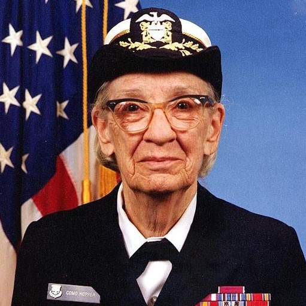
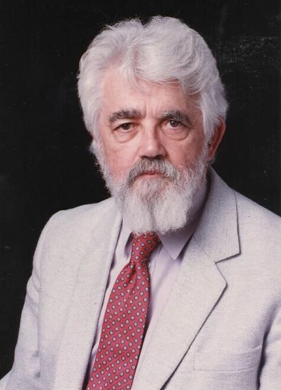

"Le code que vous écrivez rend le monde meilleur ou pire, jamais indifférent.
- Inspiré par les grands pionniers de la programmation

Découvrez les pionniers dont les langages ont façonné le développement logiciel et l’innovation numérique.
Explorez l’univers des idées audacieuses et des technologies qui transforment le monde.

Créateur de Python, un langage simple et clair. Idéal pour l’IA, la data science, le web et l’automatisation. Guido a conçu Python pour être lisible et facile à apprendre.

Inventeur de Java chez Sun Microsystems. Java est robuste, portable, et très utilisé en applications d’entreprise, mobiles (Android), et serveurs.

Créateur de JavaScript en 10 jours chez Netscape. Langage essentiel du web, il permet l’interactivité dans les pages web, et s’utilise aussi côté serveur avec Node.js.

Créateur du C++, un langage puissant orienté objet. Conçu pour étendre le C, il est largement utilisé en systèmes embarqués, jeux vidéo, et logiciels haute performance.

Inventeur du langage C et co-développeur d’UNIX. Il a posé les bases de nombreux langages modernes comme C++, Java, et même Python.

A lancé PHP pour créer des pages web dynamiques. Utilisé aujourd’hui dans WordPress, Laravel et de nombreux sites.

Pionnière de la programmation, Grace Hopper a développé COBOL, un langage destiné aux applications business, encore largement utilisé aujourd’hui dans les systèmes financiers.

John McCarthy est l’un des pères de l’intelligence artificielle. Il a inventé LISP, un langage fonctionnel utilisé en recherche IA, connu pour sa puissance en traitement symbolique et récursif.
- Inspiré par les grands pionniers de la programmation